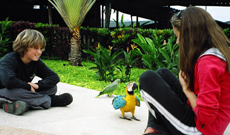
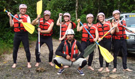

Family Focus - Ecuador Expeditions:
Chacay's Premium Package: Ecuador, the Enchanted Islands and Machu Picchu - An Unforgettable World Class Combination!
Invest in 3 weeks that you will never forget! Fly into Quito, the world's most biodiverse metropolitan area and one of UNESCO's first Cultural Heritage Sites for Humanity (1978) and immerse yourself in colonial history and architecture. Your next stop: the Galapagos Islands and the option of a four, five or eight day luxury cruise. You then return to Quito and fly to Cuzco, the capital of the Inca Empire and take the Hiram Bigham Train through the Sacred Valley to Machu Picchu. Before leaving Quito, visit Otavalo, one of Latin America's most colorful indigenous markets!
Sample Family Focus Expedition Itinerary:
Day 1: Arrive in Quito, airport welcome, and transfer to Anahí, Quito's premiere boutique hotel.
Day 2: City Tour includes the Middle of the World, and Colonial Quito, with visits to museums and churches. Spend the night at Anahí.
Day 3: Transfer by bus to Otavalo. Visit to Plaza de Ponchos, Indigenous Clinic Hambauasi. Overnight at Casa Sol.
Day 4: Lago Cuicocha, short hike, visit Cotacachi leather stores market, return to Quito. Spend the night at Anahí.
Day 5: Excursion to Cotopaxi, National Park, climb to refuge, afternoon visit to Nevado Rose Plantation. Return to Quito and sleep at Anahí.
Day 6: Morning free to explore Quito and shop, afternoon travel to Papallacta Hot Springs under the mighty Antisana mountain.
Day 7: Travel from Papallacta (Sierra) to Huasquila, an Amazon River Basin ecological reserve, with visits to RUNA and the Huasquila reforestation project.

Day 8: Visits to a traditional Quichua community, and the option of white water rafting. Stay the night at Huasquila.
Day 9: Return to Quito, trout fishing for your lunch en route; afternoon visit to theater, museums (Casa Guayasamin), sunset dinner at Mosaico, spend the night at Anahí.
Day 10: Departure by plane for the Galapagos Islands, transfer to your luxury catamaran.
Day 11: Galápagos luxury Catamarán Cruise (Treasure of the Galapagos).
Day 12: Galapagos luxury Catamaran Cruise.
Day 13: Galápagos luxury Catamarán Cruise.
Day 14: Flight from Quito to Cuzco, Inca Capital, overnight at San Blas Boutique Hotel.
Day 15: City Tour of Cuzco, overnight at San Blas Boutique Hotel.
Day 16: Tour of Sacred Valley of the Inca.
Day 17: Travel by VistaDome train to Aguas Negras, "base camp" for Macchu Picchu.
Day 18: Early morning climb by bus to Macchu Picchu, optional climb to Huayna Picchu, overnight at Aguas Negras.
Day 19: Return to Cuzco, partake in afternoon shopping.
Day 20: Return flight from Cuzco to Quito. Overnight at Anahí.
Day 21: Return to your country.
Chacay will tailor activities and programs according to your interest and expectations, time available, number of participants, and budget. Share your preferences with us, and we will be delighted to help you!
Cost: $5400